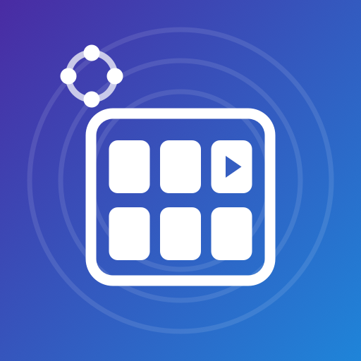

KIN STREAM DECK · MAC TESTING
Mac test status
The Mac companion is being tested locally. There is no public macOS installer or iOS tester invitation available on this page yet.
Which Macs?
Current testing uses Apple silicon. Intel and universal builds have not been verified. The current build targets macOS 13 or later; operation on macOS 13 still needs validation. Final supported systems will be listed with the download.
Planned installation
- Use the Mac download linked from the product page when it becomes available.
- Open the disk image, drag KinStreamDeck into Applications, and eject the disk image.
- Open the app and use its KSD menu and Setup & Diagnostics to follow pairing instructions.
- Keep the Mac and phone on the same trusted local network. Keep pairing PINs and QR codes private.
The Mac package includes its runtime; testers should not need Node.js, Homebrew, or Xcode. The final package will be checked on a clean Mac. If macOS blocks the app, stop and contact support with the exact message.
Permissions depend on the controls you use
- Local Network access supports discovery and communication with the phone.
- Keyboard and mouse controls can require Accessibility. Keyboard shortcuts and Music or Spotify playback can also require Automation access.
- Optional macro recording requires Accessibility, Input Monitoring, and a separate local recording confirmation. Recording is visibly indicated and drafts require review.
Allow only the access needed for features you choose. We are still verifying the prompts and denial/retry behavior on the packaged app. No Screen Recording permission is established as a requirement for these controls.
Pairing, saved decks, and diagnostics
Pairing uses an encrypted local connection with certificate pinning. Shared host decks and reconnect behavior are undergoing acceptance testing. Native input effects, reboot and upgrade persistence, physical-phone compatibility, and billing have not completed acceptance.
Use safe diagnostics for support. Review full logs before sharing; they can contain pairing information and local-network addresses. Never send pairing PINs, QR codes, tokens, passwords, or private deck contents.
Phone testing
The existing Android internal-test instructions remain available. Mac compatibility is being checked separately. An iOS Simulator build is not an iPhone installer; device testing and any TestFlight invitation will be announced only when available.
Need help?
Contact sweet.kandy@gmail.com with your Mac model, macOS version, app version, and the step that failed. Remove private information from screenshots.